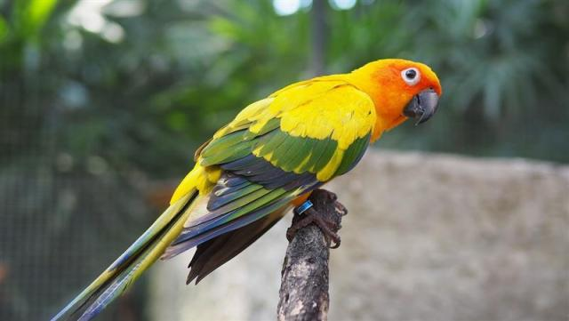
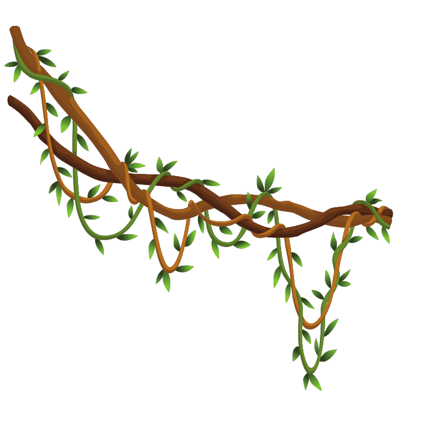
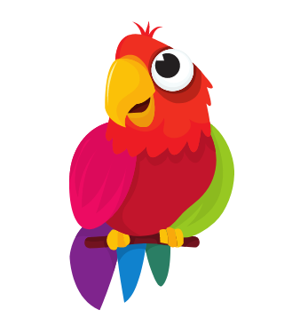

鸚鵡 Parrot
鸚鵡

鸚鵡
鸚鵡
Previous
Next

外表特徵＆外觀：
鸚鵡是一種多樣而美麗的鳥類，其外表特徵和
外觀引人注目。它們通常具有中等到大型的身
體大小，鮮豔多彩的羽毛是它們最明顯的特徵
之一。鸚鵡的羽毛色彩多樣，包括紅色、綠色
、藍色、黃色和橙色等，並且常常呈現出豐富
的斑點、條紋或斑駁的圖案。它們的喙通常呈
彎曲狀，並具有鋒利的嘴部，用於啄食和攀爬
。鸚鵡還擁有明亮的眼睛和強壯的腳趾，適合
於樹上的生活。總的來說，鸚鵡的外表特徵和
色彩使其成為令人驚嘆和受人喜愛的鳥類之一。

性格：
鸚鵡的性格多樣而豐富。它們通常具有聰明、
好奇和活潑的特質，並且能夠學習和模仿人類
的語言和動作。鸚鵡是社交性的鳥類，喜歡與
人和其他鳥類互動，並且能夠建立深厚的情感
聯繫。一些鸚鵡具有溫和友善的性格，願意接
近人類，並享受被撫摸和玩耍。然而，有些鸚
鵡可能更具挑剔和頑固的個性，需要更多的耐
心和訓練。鸚鵡還有個體差異，每隻鸚鵡都有
獨特的性格特點。總的來說，鸚鵡是聰明、社
交且有趣的伴侶，能夠為人們帶來歡樂和互動
。
鸚鵡吃什麼？
鸚鵡的食物主要包括種子、果實、堅果、蔬菜
和一些特定的鳥類飼料。它們是雜食性動物，
具有適應各種食物的能力。鸚鵡需要營養均衡
的飲食，其中種子和果實提供碳水化合物和能
量，而堅果則富含脂肪和蛋白質。此外，鸚鵡
也需要攝取維生素和礦物質，可以通過提供新
鮮的蔬菜、水果和鳥類飼料來滿足這些需求。
重要的是給予鸚鵡多樣化的食物，以確保其營
養攝入的均衡性和足夠的營養價值。飼主應該
定期檢查和調整鸚鵡的飲食，以確保它們獲得
充足的營養並維持健康。
鸚鵡分佈：
鸚鵡廣泛分布於世界各地，特別是在熱帶和亞
熱帶地區。南美洲是鸚鵡最為多樣和豐富的分
布地，擁有眾多品種，包括亞馬遜鸚鵡和鸚鵡
。此外，澳大利亞也是許多鸚鵡品種的原產地
，如玫瑰鸚鵡和卡拉環頭鸚鵡。其他地區如非
洲、亞洲和中美洲也有少數鸚鵡品種分布。然
而，由於棲息地喪失、非法貿易和環境破壞等
因素，一些鸚鵡品種面臨著生存威脅。因此，
保護和保育鸚鵡種群的自然棲息地，並加強非
法貿易的打擊，是確保鸚鵡種群繼續存在和繁
衍的重要措施。
生活型態：
鸚鵡是社交性的鳥類，具有豐富的生活型態和
習性。它們通常是群居動物，喜歡生活在樹木
上，並與同伴一起活動。鸚鵡具有聰明的頭腦
和好奇的本性，經常表現出智慧和學習能力，
可以模仿人類的語言和動作。它們喜歡進行社
交互動，包括聊天、玩耍和共享食物。鸚鵡的
活動範圍通常包括探索周圍環境、尋找食物和
築巢。此外，鸚鵡對於保持羽毛的清潔非常重
視，它們會用嘴部或腳趾梳理羽毛，保持整潔
。總的來說，鸚鵡是活潑、聰明且社交性的鳥
類，喜歡與同伴和人類互動，並展示出多樣化
的生活行為和習性。
鸚鵡的壽命大部分在15到30年之間。